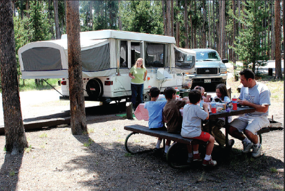

Dressing up as a tortoise to save a tortoise
For Ali Jimenez, Joshua Tree National Park has always been a part of her life. The park has given her fond memories as well as influenced her interests and even her career.
“I was actually born and raised here,” Jimenez, 21, said. “So, I’m used to the park and the desert.”
Her father, who works as a computer specialist for the park, would take her as a child to rock climb, see the wildlife, and even volunteer in the community service program. With these visits, she developed a love for reptiles and amphibians as well as for the park itself.
“It’s so cool to go out there and kind of climb around the boulders and stuff like that,” Jimenez said. “It reminds me of my childhood when I go out there. It’s very personal for me.”
So when Jimenez was offered a job about a year ago as an interpretive ranger at the park, which is located in Twentynine Palms, California, she naturally accepted. She also accepted dressing up as Mojave Max, the mascot for the park’s tortoise rescue program because of her passion for desert animals.
“I definitely jumped on that,” she said. “And I’m a student-hire so they work around my school hours because I am a full-time student. It just makes my life more convenient and it makes it a lot easier to pay for college.”
As an interpretive ranger, Jimenez receives visitors from all around the world, many of whom ask her about what to see and do in the park – all questions she said she is comfortable answering.
“A lot of people pull up and say, ‘ew, why are we here? What’s so great about it?’” she said. “But the park is so much different from the local area with its rock formations and tons of Joshua trees.”
Jimenez also enjoys teaching visitors, especially children, about the native reptiles and how to take care of them.
“So, Mojave Max kind of goes around and spreads the word about desert tortoises and he gets kids interested because he’s a giant soft, squishy tortoise,” Jimenez said about the character she plays. “And they really seem to like that. It’s a lot of fun. And it’s really rewarding to see the kids run up to me and hug me and they just love Max.”
As Mojave Max, she encourages children to participate in the emergence contest where they guess the date when desert tortoises will appear after their long winter sleep. From each local school district, a child who guessed the closest date wins a pizza party for his or her school.
Besides the joy that comes from seeing smiling children, Jimenez said the job is rewarding because it allows her to help protect tortoises and wildlife in general.
As for her future, Jimenez said she would like to finish her bachelor’s degree in herpetology, the study of reptiles and amphibians. She intends to use her knowledge to continue protecting desert animals in Joshua Tree National Park – which remains for her the ideal place for children, as well as adults, to grow and learn.